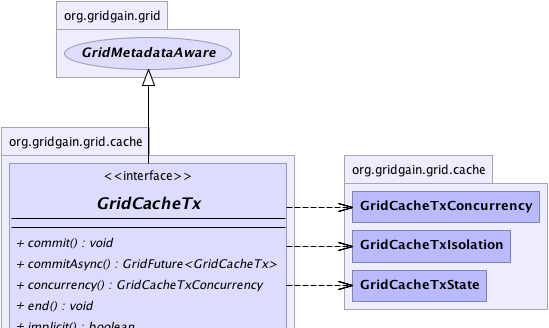
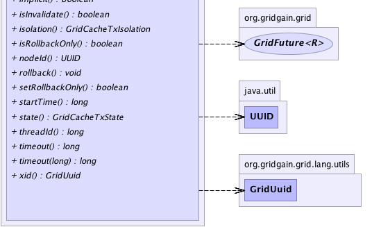

|
|

|

|
|

|

|

|
GridGain™ 3.6.0c
Community Edition |
|||||||||
| PREV CLASS NEXT CLASS | FRAMES NO FRAMES | |||||||||
| SUMMARY: NESTED | FIELD | CONSTR | METHOD | DETAIL: FIELD | CONSTR | METHOD | |||||||||
public interface GridCacheTx
Grid cache transaction. Cache transactions have a default 2PC (two-phase-commit) behavior and
can be plugged into ongoing JTA transaction by properly implementing GridCacheTmLookup
interface. Cache transactions can also be started explicitly directly from GridCacheProjection API
via any of the 'GridCacheProjection.txStart(..)' methods.
Cache transactions support the following isolation levels:
GridCacheTxIsolation.READ_COMMITTED isolation level means that always a committed value
will be provided for read operations. With this isolation level values are always read
from cache global memory or persistent store every time a value is accessed. In other words,
if the same key is accessed more than once within the same transaction, it may have different
value every time since global cache memory may be updated concurrently by other threads.
GridCacheTxIsolation.REPEATABLE_READ isolation level means that if a value was read once
within transaction, then all consecutive reads will provide the same in-transaction value. With
this isolation level accessed values are stored within in-transaction memory, so consecutive access
to the same key within the same transaction will always return the value that was previously read or
updated within this transaction. If concurrency is GridCacheTxConcurrency.PESSIMISTIC, then a lock
on the key will be acquired prior to accessing the value.
GridCacheTxIsolation.SERIALIZABLE isolation level means that all transactions occur in a completely
isolated fashion, as if all transactions in the system had executed serially, one after the other.
Read access with this level happens the same way as with GridCacheTxIsolation.REPEATABLE_READ level.
However, in GridCacheTxConcurrency.OPTIMISTIC mode, if some transactions cannot be serially isolated
from each other, then one winner will be picked and the other transactions in conflict will result in
GridCacheTxOptimisticException being thrown.
Cache transactions support the following concurrency models:
GridCacheTxConcurrency.OPTIMISTIC - in this mode all cache operations are not distributed to other
nodes until GridCacheTx.commit() or GridCacheTx.commitAsync() are called. In this mode one 'PREPARE'
message will be sent to participating cache nodes to start acquiring per-transaction locks, and once
all nodes reply 'OK' (i.e. Phase 1 completes successfully), a one-way' 'COMMIT'
message is sent without waiting for reply. If it is necessary to know whenever remote nodes have committed
as well, synchronous commit or synchronous rollback should be enabled either via
GridCacheConfiguration.isSynchronousCommit() / GridCacheConfiguration.isSynchronousRollback(),
or by setting proper flags on cache projection, such as GridCacheFlag.SYNC_COMMIT /
GridCacheFlag.SYNC_ROLLBACK.
Note that in this mode, optimistic failures are only possible in conjunction with
GridCacheTxIsolation.SERIALIZABLE isolation level. In all other cases, optimistic
transactions will never fail optimistically and will always be identically ordered on all participating
grid nodes.
GridCacheTxConcurrency.PESSIMISTIC - in this mode a lock is acquired on all cache operations
with exception of read operations in GridCacheTxIsolation.READ_COMMITTED mode. All optional filters
passed into cache operations will be evaluated after successful lock acquisition. Whenever
GridCacheTx.commit() or GridCacheTx.commitAsync() is called, a single one-way 'COMMIT' message
is sent to participating cache nodes without waiting for reply. Note that there is no reason for
distributed 'PREPARE' step, as all locks have been already acquired. Just like with optimistic mode,
it is possible to configure synchronous commit or rollback and wait till transaction commits on
all participating remote nodes.
GridCacheTxConcurrency.EVENTUALLY_CONSISTENT is the most light weight transaction isolation
level possible. In this mode values are allowed to get out-of-sync temporarily as long as they
eventually become consistent. Only one distributed message is sent one-way without waiting for
reply. In GridCacheMode.REPLICATED mode, however, if there is an unresolvable version
conflict, then it will only be resolved on next update and value may remain stale for a while
if it is not updated. In GridCacheMode.PARTITIONED mode the resolution happens on
every access, so generally it's a much safer version to use with this concurrency control from
eventual consistency stand point.
Since transaction does loose some of its ACID properties with eventually consistent concurrency,
the semantic of the word transaction changes here. It basically means that all updates within
transaction will be grouped together and sent to relevant nodes in one message, which is generally
faster than sending a message per update.
GridCache<String, Integer> cache = G.grid().cache();
...
GridCacheTx tx = cache.txStart();
try {
// Perform transactional operations.
Integer v1 = cache.get("k1");
Integer old1 = cache.put("k2", 2);
cache.removex("k3");
// Commit the transaction.
tx.commit();
}
finally {
tx.end(); // Rollback, if was not committed.
}
Or, the same logic as above can be executed by passing one or more closures to any of
the 'GridCache.inTx(..)' methods as follows:
GridCache<String, Integer> cache = G.grid().cache();
...
cache.inTx(new CI1<GridCacheProjection<String, Integer>>() {
@Override public void apply(GridCacheProjection<String, Integer> cache) {
// Perform transactional operations.
Integer v1 = cache.get("k1");
Integer old1 = cache.put("k2", 2);
cache.removex("k3");
}
}
| Wiki | |
| Forum |
|  |
|  |
| Method Summary | |
|---|---|
void |
commit()
Commits this transaction by initiating two-phase-commit process. |
GridFuture<GridCacheTx> |
commitAsync()
Asynchronously commits this transaction by initiating two-phase-commit process. |
GridCacheTxConcurrency |
concurrency()
Cache transaction concurrency mode. |
void |
end()
Rolls back transaction if it has not been committed. |
boolean |
implicit()
Flag indicating whether transaction was started automatically by the system or not. |
boolean |
isInvalidate()
Get invalidation flag for this transaction. |
GridCacheTxIsolation |
isolation()
Cache transaction isolation level. |
boolean |
isRollbackOnly()
If transaction was marked as rollback-only. |
UUID |
nodeId()
ID of the node on which this transaction started. |
void |
rollback()
Rolls back this transaction. |
boolean |
setRollbackOnly()
Modify the transaction associated with the current thread such that the only possible outcome of the transaction is to roll back the transaction. |
long |
startTime()
Start time of this transaction. |
GridCacheTxState |
state()
Gets current transaction state value. |
long |
threadId()
ID of the thread in which this transaction started. |
long |
timeout()
Gets timeout value in milliseconds for this transaction. |
long |
timeout(long timeout)
Sets transaction timeout value. |
GridUuid |
xid()
Gets unique identifier for this transaction. |
| Methods inherited from interface org.gridgain.grid.GridMetadataAware |
|---|
addMeta, addMetaIfAbsent, addMetaIfAbsent, allMeta, copyMeta, copyMeta, hasMeta, hasMeta, meta, putMetaIfAbsent, putMetaIfAbsent, removeMeta, removeMeta, replaceMeta |
| Method Detail |
|---|
GridUuid xid()
UUID nodeId()
long threadId()
long startTime()
GridCacheTxIsolation isolation()
GridCacheTxConcurrency concurrency()
boolean implicit()
put(..) or remove(..) operation is invoked
outside of transaction.
True if transaction was started implicitly.boolean isInvalidate()
true, then
remote values will be invalidated (set to null) instead
of updated.
Invalidation messages don't carry new values, so they are a lot lighter than update messages. However, when a value is accessed on a node after it's been invalidated, it must be loaded from persistent store.
GridCacheTxState state()
long timeout()
GridCacheTxTimeoutException will be thrown.
long timeout(long timeout)
timeout - Transaction timeout value.
boolean setRollbackOnly()
True if rollback-only flag was set as a result of this operation,
false if it was already set prior to this call or could not be set
because transaction is already finishing up committing or rolling back.boolean isRollbackOnly()
True if transaction can only be rolled back.
void commit()
throws GridException
two-phase-commit process.
GridException - If commit failed.
void end()
throws GridException
GridException - If transaction could not be gracefully ended.GridFuture<GridCacheTx> commitAsync()
two-phase-commit process.
void rollback()
throws GridException
GridException - If rollback failed.
|
GridGain™ 3.6.0c
Community Edition |
|||||||||
| PREV CLASS NEXT CLASS | FRAMES NO FRAMES | |||||||||
| SUMMARY: NESTED | FIELD | CONSTR | METHOD | DETAIL: FIELD | CONSTR | METHOD | |||||||||
|
GridGain - Real Time Big Data
|
|
|
|